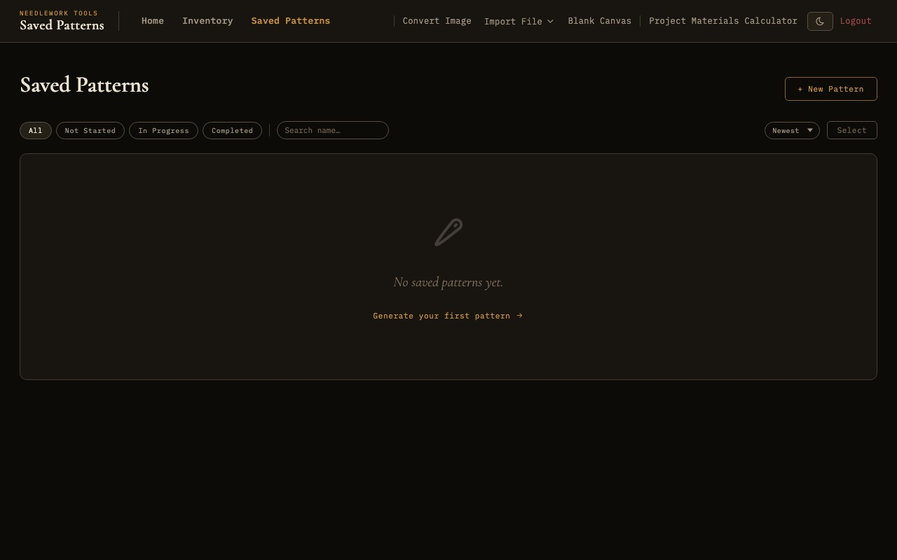

Project Management
Organize your pattern library, track stitching progress, and plan materials for your projects.

The saved patterns gallery with search, sort, and batch actions
Pattern Status
Every saved pattern in Needlework Studio has a status that reflects where it stands in your workflow. There are three status levels:
- Not Started - The pattern has been saved to your library but you have not begun stitching it. This is the default status for newly created or imported patterns.
- In Progress - You are actively stitching this pattern. Setting a pattern to "In Progress" moves it to the top of your attention and is reflected on the dashboard stats cards.
- Completed - You have finished stitching the pattern. Completed patterns remain in your library for reference but are visually distinguished from active projects.
You can change a pattern's status from the pattern detail view or from the Saved Patterns gallery. The status is displayed as a badge on each pattern card, making it easy to see the state of your projects at a glance.
Progress Tracking
Beyond the high-level status, Needlework Studio tracks detailed progress at the per-color level within each pattern. In the Pattern Viewer's legend panel, you can mark individual thread colors as complete as you finish stitching them.
Visual Progress Bars
Each pattern card in the Saved Patterns gallery displays a visual progress bar that reflects how many of the pattern's colors you have marked as complete. The bar fills proportionally - if a pattern uses 20 colors and you have completed 10 of them, the bar shows 50% progress. This gives you a quick, visual sense of how far along each project is without opening it.
The progress bar uses a warm gold color scheme consistent with the application's design and is shown on both the gallery thumbnail cards and the pattern detail view.
Saved Patterns Gallery
The Saved Patterns page is your central pattern library. It displays all of your patterns as a gallery of thumbnail cards, with tools for searching, sorting, and managing your collection.
Thumbnails
Each pattern card shows a thumbnail preview of the pattern, rendered as a miniature version of the chart. The thumbnail gives you a visual reference for quickly identifying patterns without needing to open them. Thumbnails are generated automatically when a pattern is created or imported and are updated when you make changes in the editor.
Search
A search bar at the top of the gallery lets you filter patterns by name. Type any part of a pattern's name to instantly filter the gallery to matching results. This is essential as your library grows and you need to locate a specific pattern among dozens or hundreds.
Sorting
You can sort the pattern gallery by several criteria:
- Name - Alphabetical order (A to Z or Z to A). Useful for finding patterns by name when you know what you are looking for.
- Date - Most recently modified first, or oldest first. The default sort order shows your most recently worked-on patterns at the top.
- Status - Group patterns by their status (In Progress first, then Not Started, then Completed). This puts your active projects front and center.
Batch Actions
You can select multiple patterns at once and perform batch actions on the selection. Select patterns by clicking their selection checkboxes, then use the batch action menu. Available batch actions include:
- Delete - Remove multiple patterns from your library at once. A confirmation dialog prevents accidental deletion.
- Status change - Set the status of all selected patterns simultaneously.
Batch actions are useful when reorganizing your library or removing patterns you no longer need.
Pattern Cards
Each pattern in the gallery is represented by a card that displays key information at a glance:
- Thumbnail - A miniature rendering of the pattern chart.
- Pattern name - The name you assigned when creating or importing the pattern.
- Thread count - The number of distinct thread colors used in the pattern.
- Dimensions - The size of the pattern grid in stitches (width x height).
- Status badge - A colored badge indicating the pattern's current status (Not Started, In Progress, or Completed).
- Progress bar - A visual indicator of per-color completion progress.
Click any pattern card to open it in the Pattern Viewer.
Pattern Tags
Tags let you organize your pattern library with custom labels. You can create any number of tags and assign them to patterns for quick filtering and grouping.
- Creating tags - Create a new tag by typing a name. You can optionally assign a custom color to each tag for visual distinction in the gallery.
- Assigning tags - Assign one or more tags to any pattern from the pattern detail view. A pattern can have multiple tags.
- Filtering by tag - In the Saved Patterns gallery, filter the view to show only patterns with a specific tag. This is useful for grouping patterns by project, recipient, theme, or any other category you define.
Pattern Notes
Each pattern has a free-text notes field where you can record any information you want to associate with the pattern. Notes are visible on pattern cards in the gallery and in the Pattern Viewer's notes panel (press N). Common uses include stitching reminders, fabric details, gift recipients, color substitution notes, or links to the original design source.
Duplicating Patterns
The duplicate feature creates an independent copy of any pattern in your library. When you duplicate a pattern, Needlework Studio creates a complete copy with its own separate data - the grid, legend, part stitches, backstitches, French knots, and all metadata are duplicated. Changes to the duplicate do not affect the original pattern, and vice versa.
Duplicating is useful in several scenarios:
- Experimenting with changes - Duplicate a pattern before trying a major color scheme change or design modification. If the experiment does not work out, you still have the original.
- Creating variations - Start from an existing pattern to create a different version, such as changing the color palette or adding a border.
- Preserving the original - Before heavily editing an imported pattern, duplicate it to keep a pristine copy of the original import.
Duplicated patterns appear in your library with a default name based on the original (e.g., "My Pattern (copy)"), which you can rename at any time.
Materials Calculator
The materials calculator helps you determine how many skeins of each thread color you need for a pattern. It performs calculations based on the stitch data in the pattern and presents the results in a clear, actionable format.
Calculation by Pattern
Select a pattern to calculate its thread requirements. The calculator analyzes the stitch count for each color in the pattern, accounts for the different thread consumption of each stitch type (full stitches, half stitches, backstitches, French knots), and estimates the number of skeins required for each color. The calculation assumes standard DMC skein lengths and typical stitching coverage.
Calculation by Stitch Count
If you prefer to calculate materials manually, you can enter a stitch count directly. Specify the number of stitches and the calculator will estimate the thread length and skein quantity required. This is useful when planning a custom section of a larger pattern or when working with non-standard thread.
Calculation by Fabric Size
Enter the fabric dimensions and fabric count (stitches per inch) to calculate the maximum pattern size that will fit. This helps you choose the right fabric size before you begin a project, accounting for margins and framing allowances.
Stash Calculator Mode
The stash calculator mode cross-references the materials requirements with your Thread Inventory. For each color the pattern requires, the calculator checks how many skeins you own and tells you exactly how many additional skeins you need to purchase. This produces a focused shopping list that accounts for what you already have in your stash, preventing unnecessary duplicate purchases.